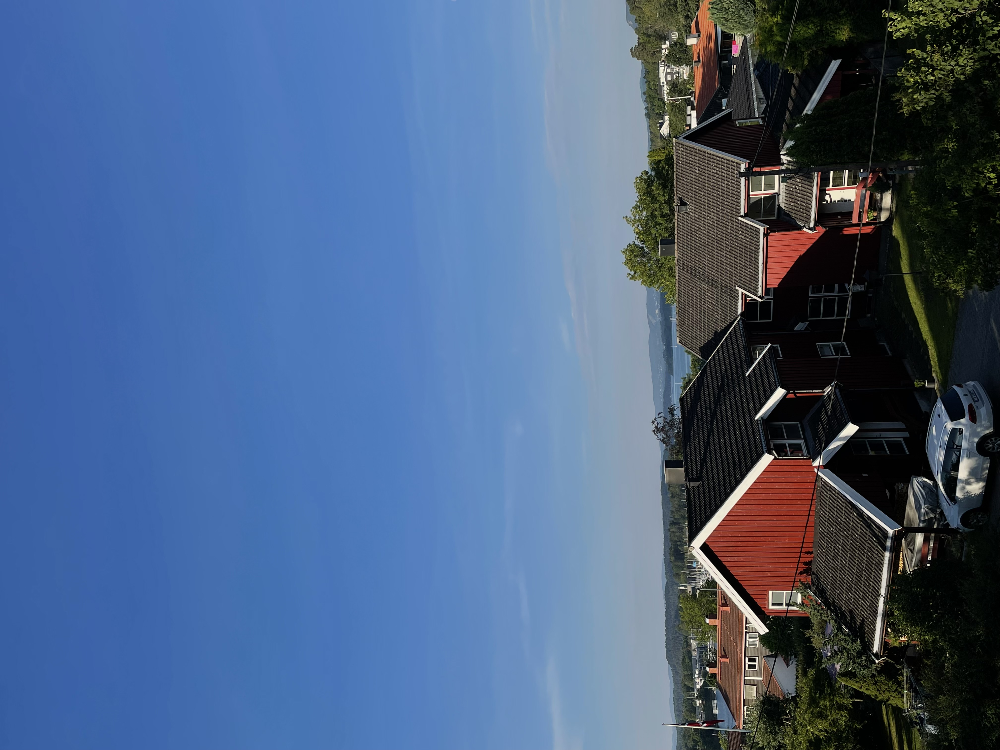
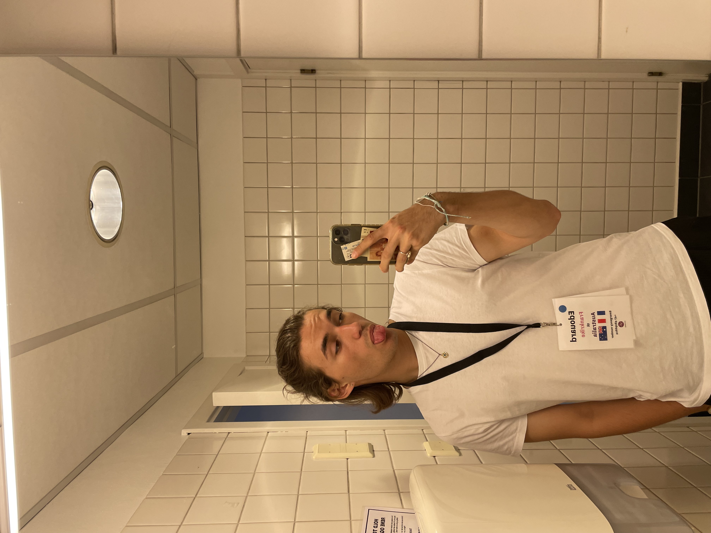
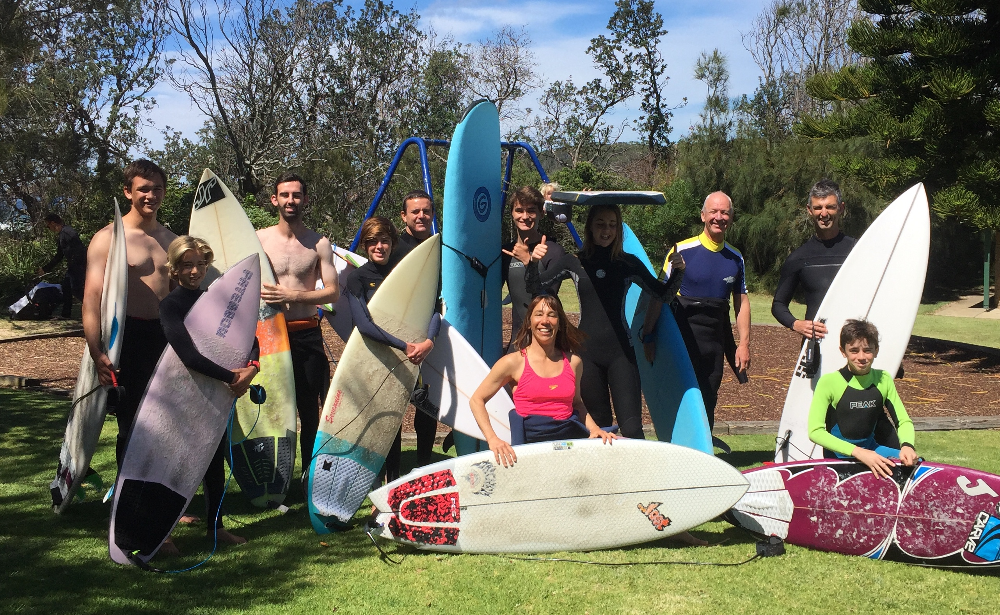
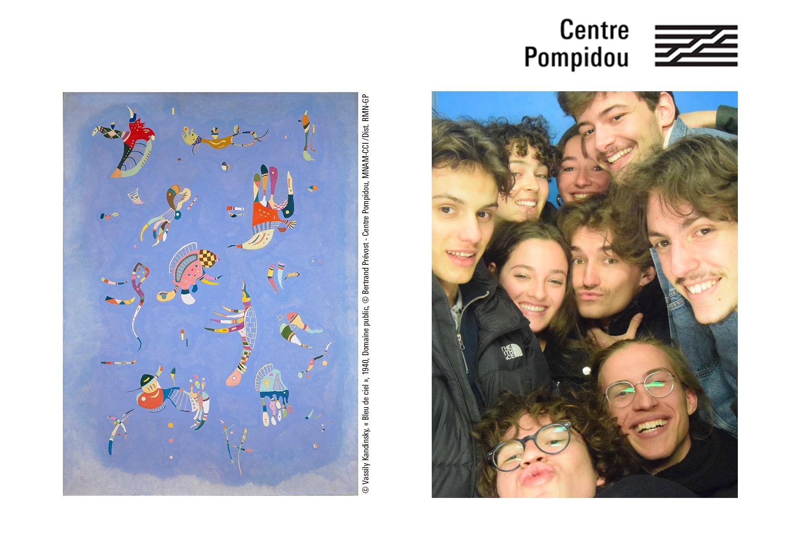

HI !! My name is Edouard Puppo. I was born and raised in France.
When I was 16 I decided to undertake an exchange year on the other side of the planet in Sydney Australia. This experience opnened my eyes on the world and its different assets. This is when I knew I wanted to lead an international life. I have travelled a lot throughout my life.
I am now a business student at ESSEC Business School
At ESSEC I have found some of my best friends. We moved in together in front of ESSEC. I am part of ESSEC España. I am at the networking pole which means I have to contact restaurant and associations in order to create event to contribute to the ESSEC student life on Cergy Campus.
ESSEC was not my first choice when choosing my future academic path. I was firstely intrested in Political Sciences, but I now realize that I made the right decision. I enjoy taking part of the associative life on the campus, as well as the different subjects. My favourite class would be Communication Skills because it is highly linked with my work at Youth For Understanding.
When I was sixteen I decided to undertake an exchange year abroad. This year has permitted me to acquire a fluent level of English, as well as maturity, independency and open-mindedness. During this gap year I followed an Australian high-school program with a diverse field of study.
When returning from my exchange year I decided to dedicate myself to help other inbounds as well as outbounds students in the process of undertaking an experience such as this.
I have travelled to Spain to follow a training course about cultures and integration when going to live abroad. This summer I had the opportunity to be flown to Oslo, Norway in order to entertain an arrival orientation seminar.
YFU Norway
AUSTRALIA
For the end of my first year at ESSEC Business School, it is mandatory for me to do a three months internship. I have been searching and apply for a few weeks, but if you happen to be passing by my website, take a look at my LinkedIn down there 😃.
